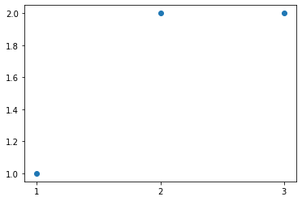
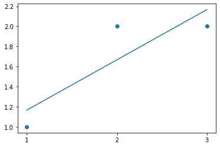
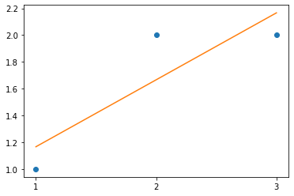

Regression Analysis using Linear Algebra and NumPy - Code Along#
onl01-dtsc-ft-022221
04/29/21
Introduction#
In the previous sections, you learned that in statistical modeling, regression analysis is a set of statistical processes for estimating the relationships between data entities (variables). Linear regression is an important predictive analytical tool in the data scientist’s toolbox. Here, you’ll try and develop a basic intuition for regression from a linear algebra perspective using vectors and matrix operations. This lesson covers least-squares regression with matrix algebra without digging deep into the geometric dimensions.
You can find a deeper mathematical and geometric explanation of the topic here. In this lesson, we’ll try to keep things more data-oriented.
Objectives#
You will be able to:
Apply linear algebra to fit a function to data, describing linear mappings between input and output variables
Indicate how linear algebra is related to regression modeling
Regression analysis#
By now, you know that the purpose of the regression process is to fit a mathematical model to a set of observed points, in order to later use that model for predicting new values e.g. predicting sales, based on historical sales figures, predicting house prices based on different features of the house, etc.
Let’s use a very simple toy example to understand how this works with linear algebra. Say you are collecting data on total number of sales per day for some business. Imagine you’ve got three data points in the format:
(day, total number of sales(in hundreds))
(1, 1) , (2, 2) , (3, 2)
If we plot these points on a scatter plot with day (x-axis) vs. sales figures (y-axis), this is what we get:
import matplotlib.pyplot as plt
import numpy as np
x = np.array([1,2,3])
y = np.array([1,2,2])
plt.plot(x, y, 'o')
plt.xticks(x)
plt.show()
import pandas as pd
import numpy as np
import matplotlib.pyplot as plt
x = np.array([1,2,3])
y = np.array([1,2,2])
# df = pd.DataFrame({
# 'x':x,'y':y})#.set_index('x')
plt.scatter(x,y)
plt.xticks(x)
([<matplotlib.axis.XTick at 0x7f8ac318a2b0>,
<matplotlib.axis.XTick at 0x7f8ac318a280>,
<matplotlib.axis.XTick at 0x7f8ac3168d90>],
[Text(0, 0, ''), Text(0, 0, ''), Text(0, 0, '')])

# Code here
Fitting a model to data - A quick refresher#
The purpose of linear regression would be to fit a mathematical model (a straight line) in the parameter space that best describes the relationship between day and sales. Simple linear regression attempts to fit a line (in a 2-dimensional space) to describe the relationship between two variables as shown in the example below:

Following this, if you were to identify a relationship between the day and total number of sales, the goal would be to seek a function that describes this line and allows us to linearly map input data points (day) or independent variable to outcome values (sales) or dependent variable. If you do this, you first assume that there is an underlying relationship that maps “days” uniquely to “number of sales”, that can be written in the function form as an equation of the straight line i.e.
where \(c\) is the intercept of the line and \(m\) denotes the slope, as shown below:

We can write the fitting function based on the above as sales being a function of days.
or, from \(y= mx+c\)
(where y is the number of sales per day and x represents the day. c (intercept) and m (slope) are the regression coefficients we are looking for hoping that these co-efficients will linearly map day to the number of sales).
So using this, we can show our three data points ((1, 1) , (2, 2) , (3, 2)) as:
\(c + m*1 = 1\)
\(c + m*2 = 2\)
\(c + m*3 = 2\)
We can see that our data points do not lie on a line. The first two points make a perfect linear system. When \(x = 1\), \(y = 1\); and when \(x = 2\), \(y = 2\) i.e. we can draw a straight line passing through these points. When x = 3, b = 2, you know the three points do not lie on the same line as first two points, and our model will be an approximation i.e.
there will be some error between the straight line and the REAL relationship between these parameters.
This behavior can be simulated by using NumPy’s polyfit() function (similar to statsmodels.ols) to draw a regression line to the data points as shown below. Here is the documentation for np.polyfit().
from numpy.polynomial.polynomial import polyfit
# Fit with polyfit function to get c(intercept) and m(slope)
# the degree parameter = 1 to models this as a straight line
c, m = polyfit(x, y, 1)
# Plot the data points and line calculated from ployfit
plt.plot(x, y, 'o')
plt.plot(x, c + (m * x), '-')
plt.xticks(x)
plt.show()
print(c, m)
from numpy.polynomial.polynomial import polyfit # Code here
c,m =polyfit(x,y,1)
c,m
(0.6666666666666664, 0.5000000000000002)
y_hat = x * m +c
plt.scatter(x,y)
plt.plot(x,y_hat)
plt.xticks(x)
([<matplotlib.axis.XTick at 0x7f8ac32ab160>,
<matplotlib.axis.XTick at 0x7f8ac32ab130>,
<matplotlib.axis.XTick at 0x7f8ac32a2dc0>],
[Text(0, 0, ''), Text(0, 0, ''), Text(0, 0, '')])

The numbers obtained here reflect the slope (0.5) and intercept values (0.66).
The line drawn above using this built-in regression model clearly doesn’t touch all the data points. As a result, this is an approximation of the function you’re trying to find. Now let’s see how to achieve the same functionality with matrix algebra instead of the polyfit() function.
Create matrices and vectors#
A linear system like the one above can be solved using linear algebra! You only need to deal with a few vectors and matrices to set this up.
Recalling linear systems from the previous lessons, you have:
The intercept and error terms#
The column of ones in the first matrix refers to the intercept (\(c\)) from \(mx+c\). If you don’t include this constant, then the function is constrained to the origin (0,0), which would strongly limit the types of relationships the model could describe. You want to include an intercept to allow for linear models to intersect with the \(y\)-axis at values different from 0 (in the image shown earlier, \(c\) was 2, because the straight line crossed the \(y\)-axis at \(y\)=2).
In above , we are hoping that there is some linear combination of the columns of the first matrix that gives us our vector of observed values (the vector with values 1,2,2).
Unfortunately, we already know that this vector does not fit our model perfectly. That means it is outside the column space of A and we can’t solve that equation for the vector \(x\) directly. Every line we draw will have some value of error \(e\) associated with it.
The goal is to choose the vector \(x\) for unknown variables to make \(e\) as small as possible.
Ordinary least squares#
A common measure to find and minimize the value of this error is called Ordinary Least Squares.
This says that our dependent variable, is composed of a linear part and error. The linear part is composed of an intercept and independent variable(s), along with their associated raw score regression weights.
In matrix terms, the same equation can be written as:
\( y = \boldsymbol{X} b + e \)
This says to get y (sales), multiply each \(\boldsymbol{X}\) by the appropriate vector b (unknown parameters, the vector version of \(m\) and \(c\)), then add an error term. We create a matrix \(\boldsymbol{X}\) , which has an extra column of 1s in it for the intercept. For each day, the 1 is used to add the intercept in the first row of the column vector \(b\).
🎗 Study Group Question/Answer#
Question#
In the linear regression code along, it says “Let’s assume that the error is equal to zero on average and drop it to sketch a proof” and then we walk through the function for how to solve for m and c using matrix multiplication and inverses, etc. But the whole point is that our example DOES have errors; our line will not fit perfectly.
I get how this works when there is a perfect linear relationship, but how is this working when we know there isn’t a perfect relationship? My understanding is that the gradient descent stuff in the next topic isn’t being applied to OLS.
In other words, where does the “least” part come in, because I can’t figure out how these formulas are determining the least of anything
Resource for More Complete Answer#
Let’s assume that the error is equal to zero on average and drop it to sketch a proof:
\( y = \boldsymbol{X} b\)
Now let’s solve for \(b\), so we need to get rid of \(\boldsymbol{X}\). First we will make X into a nice square, symmetric matrix by multiplying both sides of the equation by \(\boldsymbol{X}^T\) :
\(\boldsymbol{X}^T y = \boldsymbol{X}^T \boldsymbol{X}b \)
And now we have a square matrix that with any luck has an inverse, which we will call \((\boldsymbol{X}^T\boldsymbol{X})^{-1}\). Multiply both sides by this inverse, and we have
\((\boldsymbol{X}^T\boldsymbol{X})^{-1}\boldsymbol{X}^T y =(\boldsymbol{X}^T\boldsymbol{X})^{-1} \boldsymbol{X}^T \boldsymbol{X}b \)
It turns out that a matrix multiplied by its inverse is the identity matrix \((\boldsymbol{X}^{-1}\boldsymbol{X})= I\):
\((\boldsymbol{X}^T\boldsymbol{X})^{-1}\boldsymbol{X}^T y =I b \)
And you know that \(Ib= b\) So if you want to solve for \(b\) (that is, remember, equivalent to finding the values \(m\) and \(c\) in this case), you find that:
\( b= (\boldsymbol{X}^T\boldsymbol{X})^{-1}\boldsymbol{X}^T y \)
Here, we’ll focus on the matrix and vector algebra perspective. With least squares regression, in order to solve for the expected value of weights, referred to as \(\hat{X}\) (”\(X\)-hat”), you need to solve the above equation.
Remember all above variables represent vectors. The elements of the vector X-hat are the estimated regression coefficients \(c\) and \(m\) that you’re looking for. They minimize the error between the model and the observed data in an elegant way that uses no calculus or complicated algebraic sums.
The above description can be summarized as:
Using linear regression is just trying to solve \(Xb = y\). But if any of the observed points deviate from the model, you can’t find a direct solution. To find a solution, you can multiply both sides by the transpose of \(X\). The transpose of \(X\) times \(X\) will always allow us to solve for unknown variables.
Calculate an OLS regression line#
OLS Summary (JMI)#
We know that: $\(\large y = \boldsymbol{X} b\)$
We want to solve for \(b\) (figure out our coefficients)
to solve for \(b\), must “divide” by \(X\) on both sides of our eqn.
To “divide” by \(X\) in linear algebra we have to multiply \(X\) with its inverse \(X^{-1}\) (dot product)
However, only square matrices have an inverse.
To ensure that \(X\) a square matrix, we multiply it by its transpose \((\boldsymbol{X}^T\boldsymbol{X})\).
We then solve for the inverse of \((\boldsymbol{X}^T\boldsymbol{X})^{-1}\).
So to solve for \(b\) we $\( \large b= (\boldsymbol{X}^T\boldsymbol{X})^{-1}\boldsymbol{X}^T y \)$
Codealong#
Let’s use the above formula to calculate a solution for our toy problem:
# Calculate the solution
X = np.array([[1, 1],[1, 2],[1, 3]])
y = np.array([1, 2, 2])
Xt = X.T
XtX = Xt.dot(X)
XtX_inv = np.linalg.inv(XtX)
Xty = Xt.dot(y)
x_hat = XtX_inv.dot(Xty) # the value for b shown above
x_hat
Our code#
# Code here
X = np.array([[1, 1],[1, 2],[1, 3]])
y = np.array([1, 2, 2])
X
array([[1, 1],
[1, 2],
[1, 3]])
## Calc transpose of x
Xt = X.T
Xt
array([[1, 1, 1],
[1, 2, 3]])
## Make X a square matrix
XtX = Xt.dot(X)
XtX
array([[ 3, 6],
[ 6, 14]])
## calc the inverse of XtX
XtX_inv = np.linalg.inv(XtX)
XtX_inv
array([[ 2.33333333, -1. ],
[-1. , 0.5 ]])
b = XtX_inv.dot(Xt).dot(y)
b
array([0.66666667, 0.5 ])
## X_hat is equal to b
x_hat = b
The solution gives an intercept of 0.6 and slope value 0.5. Let’s see what you get if you draw a line with these values with given data:
# Define data points
x = np.array([1, 2, 3])
y = np.array([1, 2, 2])
# Plot the data points and line parameters calculated above
plt.plot(x, y, 'o')
plt.plot(x, x_hat[0] + (x_hat[1] * x), '-')
plt.xticks(x)
plt.show()
# # Code here
plt.plot(x, y, 'o')
plt.plot(x, x_hat[0] + (x_hat[1] * x), '-')
plt.xticks(x)
([<matplotlib.axis.XTick at 0x7f8ac3502910>,
<matplotlib.axis.XTick at 0x7f8ac35028e0>,
<matplotlib.axis.XTick at 0x7f8ac3500460>],
[Text(0, 0, ''), Text(0, 0, ''), Text(0, 0, '')])

There you have it, an approximated line function! Just like the one you saw with polyfit(), by using simple matrix algebra.
Regression with multiple variables#
Above, you saw how you can draw a line on a 2D space using simple regression. If you perform a similar function with multiple variables, you can have a parameter space that is not 2D. With 3 parameters, i.e. two input and one output feature, the fitting function would not be a line, but would look like a plane:

When you have more than one input variable, each data point can be seen as a feature vector \(x_i\), composed of \(x_1, x_2, \ldots , x_m\) , where \(m\) is the total number of features (columns). For multiple regression, each data point can contain two or more features of the input. To represent all of the input data along with the vector of output values we set up a input matrix X and an output vector y.
you can write this in general terms, as you saw earlier:
\(\boldsymbol{X} \beta \approx y\)
Where X are the input feature values, \(\beta\) represents the coefficients and y is the output (value to be predicted). In a simple least-squares linear regression model you are looking for a vector \(\beta\) so that the product \(X \beta\) most closely approximates the outcome vector y.
For each value of input features \(x_i\), we can compute a predicted outcome value as:
observed data \(\rightarrow\) \(y = b_0+b_1x_1+b_2x_2+ \ldots + b_px_p+ \epsilon \)
predicted data \(\rightarrow\) \(\hat y = \hat b_0+\hat b_1x_1+\hat b_2x_2+ \ldots + \hat b_px_p \)
error \(\rightarrow\) \(\epsilon = y - \hat y \)
Just like before, the formula to compute the beta vector remains:
\( \large b= (\boldsymbol{X}^T\boldsymbol{X})^{-1}\boldsymbol{X}^T y \)
So you see that the general solution involves taking a matrix transpose, the inverse, and dot multiplications on the lines of solving a linear system of equations.
In the next lab, you’ll use a simple dataset and with the above formulation for multivariate regression, you’ll try to fit a model to the data and see how well it performs.
Further reading#
You’re strongly advised to visit the following links to develop a strong mathematical and geometrical intuition around how least squares work. These documents will provide you with a visual intuition as well as an in-depth mathematical formulation for above equations along with their proofs.
Summary#
In this lesson, you had a gentle introduction to how we can use linear algebra to solve regression problems. You saw a toy example in the case of simple linear regression, relating days to number of sales and calculated a function that approximates the linear mapping.
You also learned about how linear regression works in the context of multiple input variables and linear algebra. In the next lab, you’ll use these equations to solve a real world problem.